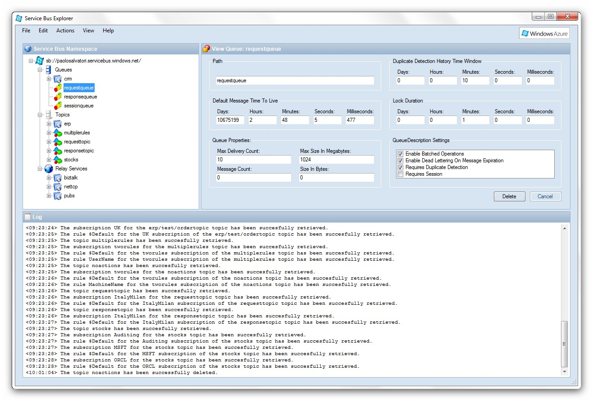
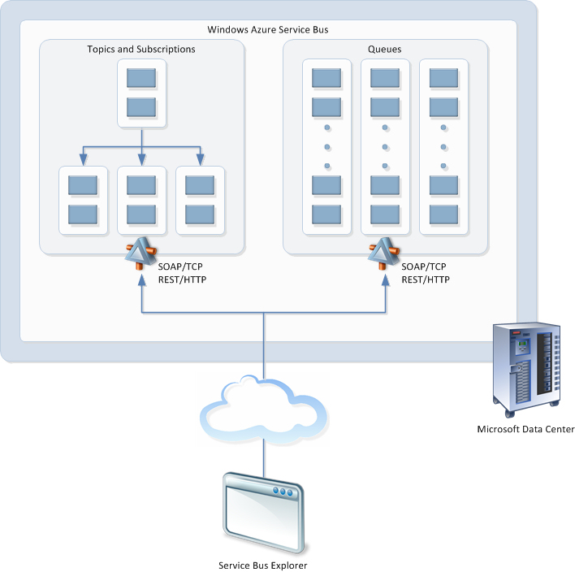

Author: Paolo Salvatori
Queues and topics represent the foundation of a new cloud-based messaging and integration infrastructure that provides reliable message queuing and durable publish/subscribe messaging capabilities to both cloud and on-premises applications based on Microsoft and non-Microsoft technologies. .NET applications can use the new functionality offered by queues and topics by using the new messaging API (Microsoft.ServiceBus.Messaging) released with the Windows Azure SDK V1.5 or via WCF by using the new NetMessagingBinding. Likewise, any Microsoft or non-Microsoft applications can use a Service Bus REST API to manage and access messaging entities over HTTPS.
Queues and topics were first introduced by the Community Technology Preview (CTP) of Windows Azure that was released in May 2011. At that time, the Windows Azure Management Portal didn’t provide any user interface to administer, create and delete messaging entities and the only way to accomplish this task was using the .NET or REST API. For this reason, In June 2011 I decided to build a tool called Service Bus Explorer that would allow developers and system administrators to connect to a Service Bus namespace and administer its messaging entities.

During the last few months I continued to develop this tool and add new features with the intended goal to facilitate the development and administration of new Service Bus-enabled applications. In the meantime, the Windows Azure Management Portal introduced the ability for a user to create queues, topics, and subscriptions and define their properties, but not to define or display rules for an existing subscription. Besides, the Service Bus Explorer enables to accomplish functionalities, such as importing, exporting and testing entities, that are not currently provided by the Windows Azure Management Portal. For this reason, the Service Bus Explorer tool represents the perfect companion for the official Azure portal and it can also be used to explore the features (session-based correlation, configurable detection of duplicate messages, deferring messages, etc.) provided out-of-the-box by the Service Bus brokered messaging.
For more information on the Service Bus, you can use the following resources:
In order to use the Brokered and Relay messaging functionality provided by the Service Bus, the first operation to perform is to provision a new Service Bus namespace or modify an existing namespace to include the Service Bus. You can accomplish this task from the Windows Azure Management Portal.
Once completed this step, you can start creating and using queues, topics and subscriptions. You have many options to provision and manage messaging entities:
Using Windows Azure Management Portal is a handy and convenient manner to handle the messaging entities in a given Service Bus namespace. However, at least at the moment, the set of operations that a developer or a system administrator can perform using its user interface is quite limited. For example, the Windows Azure Management Portal actually allows a user to create queues, topics, and subscriptions and define their properties, but not to create or display rules for an existing subscription. At the moment, you can accomplish this task only by using the .NET Messaging API. In particular, to add a new rule to an existing subscription you can use the AddRule(String, Filter) or the AddRule(RuleDescription) methods exposed by the SubscriptionClient class, while to enumerate the rules of an existing subscription, you can use the GetRules method of the NamespaceManager class. Besides, the Windows Azure Management Portal actually does not provide the ability to perform the following operations:
That’s why in June, I created a tool called Service Bus Explorer that allows a user to create, delete and test queues, topics, subscriptions, and rules. My tool was able to manage entities in the Labs Beta environment. However, the new version of the Service Bus API introduced some breaking changes, as you can read here, so I built a new version of the Service Bus Explorer tool that introduces a significant amount of new features.
The following picture illustrates the high-level architecture of the Service Bus Explorer tool. The application has been written in C# using Visual Studio 2010 and requires the installation of the .NET Framework 4.0 and Windows Azure SDK for .NET. The tool can be copied and used on any workstation that satisfies the prerequisites mentioned above to manage and test the Brokered and Relay messaging services defined in a given Service Bus namespace.
Read the full article on MSDN.
NOTE: I'll continue to develop the tool and add new functionalities. So I strongly recommend you to visit this page from time to time for a new version.
Author: Paolo Salvatori
Update: 28 August 2012
This version introduces the following updates:
{kind=link}
{kind=link}